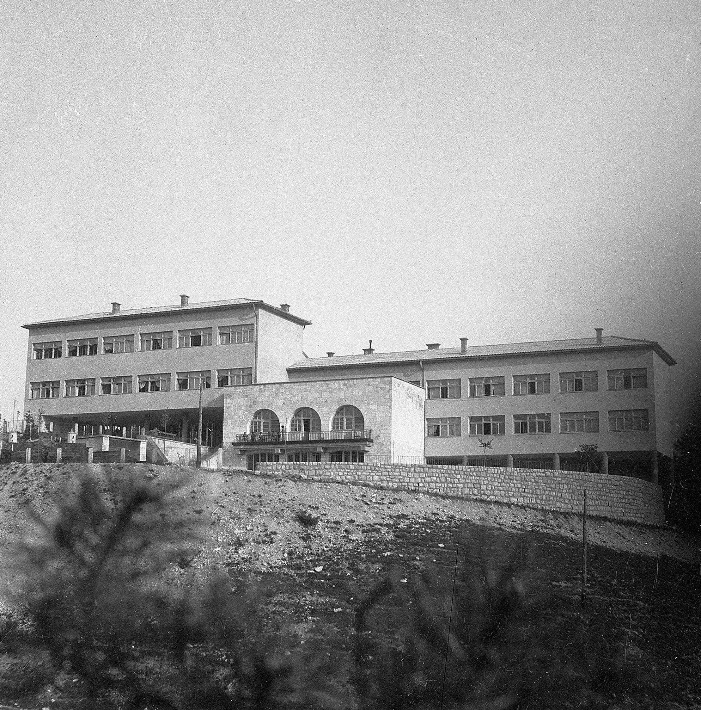
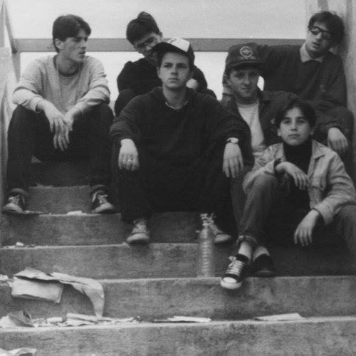
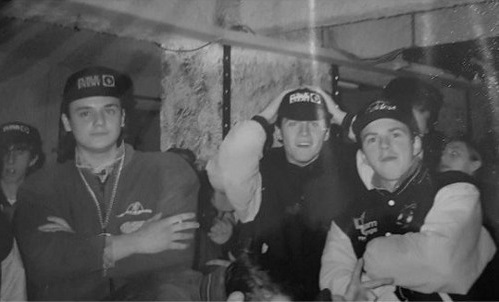
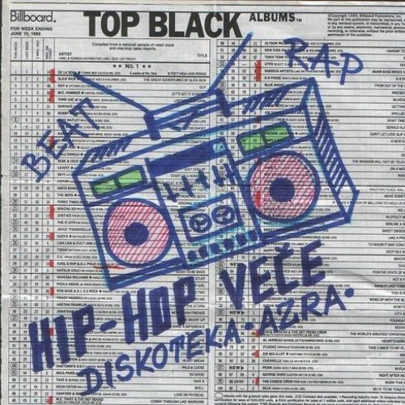

The Bihać Hip Hop began developing in the late 1970s and continued through the 1980s influenced by American Hip Hop and local youth culture. Bihać became one of the earliest and most active Hip Hop centers in Bosnia and Herzegovina particularly in the Nova Četvrt (New Quart) and Harmani/Centre local communities and neighborhoods.

Borici (Borići) dorm in New Quart where Hip Hop first emerged in Bihać
Early 1980s Foundations
First B-Boy in Nova Četvrt: Jasko Pečenković (Pečeni). Pečeni was inspired by the documentaries coming from the streets of New York and later honed his skills by exchanging knowledge and experience with German B-Boys coming to New Quart.
New Quart Breakers: The first crew, formed by Pečeni and Beytz D.
School & Club Battles: Crew battles took place at schools (Avnoj, USAOJ, Technical High School) and community clubs like Brklja, the Borici (Borići) dorm in New Quart where Hip Hop first emerged in Bihać and the open disco in Zegar (Žegar).
Notable B-Boys:Brki, Pico (Pićo) Copy, Hary, Jakanni (RIP), Dejo, Grba, MCA, Mera MC, MC Burzoti, Pečeni, Dicka (Dićka), Dule, Bestak (Beštak), Dino, Drugi Dino, Boban and Pipi and others.
Where music was bought: Department store Beograd; RIZ record & cassette store.
Mid 1980s
Master Scratch Band (1984): Released the single Degout / Cut It Up – Cut It Up Two regarded as the first Hip Hop or Electro release in Yugoslavia. Published by Jugoton it enabled broad distribution and served as a cultural bridge between Western music trends and local creativity paving the way for early acceptance of Hip Hop culture in Bihać.
Beytz D: Recorded “Dona Muzički Vlak” (also known as “Rap Attack”) shows from Radio Velika Gorica (1984) and later tuned into “Electrofunk Premiere” on Radio 101 (1986) sharing tapes with Bihać fans.
Radio Club Bihać: One of the prominent places where Hip Hop music was distributed and broadcast in the city. Using the audio equipment the club owned, Hip Hop albums were reproduced and eventually aired. The club existed behind the Beograd Department Store and was demolished just before the outbreak of the war in Bosnia.
Significant Radio Shows:"Po vašem izboru" (At Your Request) aired on the first program of Radio Zagreb and "Rock Express" aired on the second program of Radio Zagreb hosted by Ante Batinović (Ante Batinovic).
Movies: Hip Hop films like Wild Style, Beat Street, Breakin’, Breakin’ 2 and Krush Groove were screened in Bihać cinemas, shaping B-Boying, DJing, graffiti and fashion.
Electroshock Crew: Formed mid-80s by DJ Vuki, MC Fresh Mix, Mister B and MCA. After the arrival of Beytz D the group changed its name to “Screw Boys”.
“The first name of the crew was ELECTROSHOCK (DJ Vuki, MC Fresh Mix, Mister B and MCA). When the living legend Beytz D joined the crew, the crew changed name to SCREW BOYS.” — DJ Ido

Electroshock Crew evolving into Screw Boys, 1985
1987: Scene Expansion and Cultural Hotspots
In 1987, Beytz D moved to Zagreb for university and became actively involved with the Zagreb Hip Hop scene. He brought new records and tapes back to Bihać strengthening the local movement.
Rupa (The Hole): An underground club located in the basement of the Bihać municipal building became the epicenter of the local Hip Hop scene. From 1987 to 1990, the venue hosted DJ/MC performances, graffiti sessions, fashion shows and B-Boy battles.

Rupa ("The Hole") underground club in Bihać municipal basement, 1989
1989: First Major Hip Hop Event
Club Azra, Park Hotel: The first large-scale Hip Hop party in Bihać organized entirely by Screw Boys with DJ Vuki as the main DJ. Hundreds attended, marking a cultural breakthrough.

The first major Hip Hop party in Bihać organized by Screw Boys, 1989
Legacies
DJ Ido (MC Fresh Mix): DJ Ido is an early Hip Hop figure from Bihać, Bosnia and Herzegovina. He is known for his contributions to the local Hip Hop scene during the 1980s and for preserving the culture's legacy through personal commentary and historical documentation.
DJ Ido is frequently mentioned alongside other early pioneers of Bihać's Hip Hop movement including DJ Vuki, Beytz D, "Mali" Rade, Deyan, Meshan and Maska. His reflections appear in historical notes tied to the track "Bihac Hip Hop Anthem of The 80s" on SoundCloud :
“Regardless [of the] war in Bosnia the true HIP HOP Spirit has survived in Bihać. The young, true HIP HOP warriors have picked up it where the Screw Boys had to stop.” — DJ Ido
DJ Ido provides key insights into the evolution of groups such as "Electroshock Crew" which later became known as "Screw Boys". These crews performed in various local venues between 1982 and 1989 contributing to the growth of the B-Boying, DJing, MCing and Aerosol/Graffiti subcultures within the city.
DJ Vuki: A pioneering Hip Hop DJ and one of the first Aerosol artists from Bihać. He co-founded Electroshock Crew with MC Fresh Mix, Mister B and MCA, later evolving into Screw Boys after Beytz D joined. Remembered as the main DJ at the historic 1989 Club Azra event, his contributions paved the way for later generations of DJs, MCs and graffiti artists in the region.
DJ Vuki and MC Fresh Mix at Radio Club Bihać, 1983